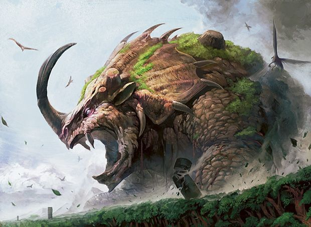

Behemot es una bestia o criatura mítica cuya apariencia no está del todo definida, ya que para algunos se describe como una especie de elefante o hipopótamo y para otros es una especie de rinoceronte o búfalo. Es un personaje de la mitología hebrea, se cree que su nombre significa muchos animales, según su idioma y éste aparece en el Job 40:15-24, Behemot es considerado como el primer animal terrestre que fue creado, se dice que sólo su cola es más grande que un tronco de cedro y además sus huesos son tan fuertes como los tubos de bronce. El mismo, por su gran tamaño, gobierna a todas las criaturas terrestres.

“Sus huesos son fuertes como bronce, Y sus miembros como barras de hierro"(job 40:18).